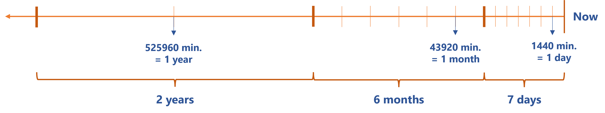

Usercube-Manage-History
This tool optimizes the data history stored in the database, reducing its size and enhancing database performance.
The inner workings of this executable are based on the ValidFrom and ValidTo attributes that specify the validity period of a given assignment. These attributes are inside the following tables which are the tables actually purged: ur_resources; ur_resourcelinks; up_assignedcompositeroles; up_assignedsingleroles; up_assignedresourcenavigations; up_assignedresourcetypes.
Examples
Purge before a period
To clean the database periodically, it can be purged of all the history older than a given period of time.
The following example deletes all the history from the database that is more than 12-month old:
Code attributes enclosed with <> need to be replaced with a custom value before entering the script in the command line.
./Usercube-Manage-History.exe --purge-before-months 12 --database-connection-string "data source=.;Database=Usercube;Integrated Security=SSPI;Min Pool Size=10;encrypt=false;"Purge before a date
The database can be purged of all history older than a given date.
The following example deletes all the history from the database older than May 26th 1993:
Code attributes enclosed with <> need to be replaced with a custom value before entering the script in the command line.
./Usercube-Manage-History.exe --purge-before-date 19930526 --database-connection-string "data source=.;Database=Usercube;Integrated Security=SSPI;Min Pool Size=10;encrypt=false;"Optimize
The database's history can be optimized by removing intermediate versions based on their age, for example keeping only one version the last week, one per month the last 6 months and then one per year for 3 years.
The following example reduces the history from the database, keeping at most one history version per interval. Here we keep one version per day (1440 minutes) in the last 7 days, then one version per month (43920 minutes) in the last 6 months before the previously defined period, then one version per year (525960 minutes) in the last 2 years before the previously defined periods.

For each period, if there is more than one version (i.e. ValidFrom is inside the interval), the versions are merged in the following way:
-
The latest version is kept
-
The oldest date is kept (that is, in the database, the
ValidForis equal to the one of the oldest version in the considered period).
Code attributes enclosed with <> need to be replaced with a custom value before entering the script in the command line.
./Usercube-Manage-History.exe --optimize "1440:7 43920:6 525960:2" --database-connection-string "data source=.;Database=Usercube;Integrated Security=SSPI;Min Pool Size=10;encrypt=false;"
If you want to configure a time period when there is no purge and all history is kept as is, then you can specify a short duration that allows a single change, for example only one minute. The following example copies the previous one, in addition we want to keep all changes of the last 6 hours (360 minutes): --optimize 1:360 1440:7 43920:6 525960:2.
Clean duplicates
As given data can have several versions in the database, redundant rows can be deleted and replaced with one row that covers the consolidated time range.
The following example remove all duplicates in the database.
Code attributes enclosed with <> need to be replaced with a custom value before entering the script in the command line.
./Usercube-Manage-History.exe --clean-duplicates --database-connection-string "data source=.;Database=Usercube;Integrated Security=SSPI;Min Pool Size=10;encrypt=false;"
The following example remove all duplicates induced by the pwdLastSet property.
Code attributes enclosed with <> need to be replaced with a custom value before entering the script in the command line.
./Usercube-Manage-History.exe --clean-duplicates --excluded-resource-columns "pwdLastSet" --database-connection-string "data source=.;Database=Usercube;Integrated Security=SSPI;Min Pool Size=10;encrypt=false;"
Solicit memory rather than the database
To reduce the database load, the tool's optimizations can be made via the local device's memory.
The following example deletes all the history from the database that is more than 12-month old, the optimizations being computed in memory instead of in the database:
Code attributes enclosed with <> need to be replaced with a custom value before entering the script in the command line.
./Usercube-Manage-History.exe --purge-before-months 12 --in-memory --database-connection-string "data source=.;Database=Usercube;Integrated Security=SSPI;Min Pool Size=10;encrypt=false;"
Arguments
|
Argument Name |
Type |
Description |
|---|---|---|
|
--clean-duplicates |
No Value |
Removes duplicate historical data. |
|
--entity-type |
String |
When using |
|
--excluded-resource-columns |
String list |
When using |
|
--in-memory |
No value |
Performs optimizations in memory instead of the database. It implies heavy memory consumption but light SQL load. |
|
--optimize |
String list |
Reduces the history and optimizes the versions that are kept based on the precision given through ranges in the argument. A range is specified by a duration in minutes followed by the number of occurrences. For example 60:10 defines a range of 60 minutes repeated 10 times, or 10 snapshots repeated at 60 minute intervals. For each interval, at most one version is kept in the history. The intervals are evaluated in the given order from now, backwards. In the previous example, it means the more recent versions are kept with a high precision (one per day initially), then with lesser and lesser precision (one per month and then one per year). If the data has not changed over an interval, no optimization can be done. |
|
--purge-before-date |
String |
Deletes all the history older than the given date in the yyyyMMdd format. |
|
--purge-before-months |
String |
Deletes all the history older than the given number of months. |
|
--database-connection-string |
String |
Connection string of the database. |
The available actions (clean duplicates; purge; optimize) are all optional, but at least one must be used in the executable command.